Biomimicry & Agentic AI
for Critical Economics & Development
Reading nature as model, measure & mentor — and turning its solutions into algorithms for economies that regenerate.

 Prepared forXX Jornadas de Economía Crítica · Bilbao 2026EHU Bizkaia · Facultad de Economía y Empresa
Prepared forXX Jornadas de Economía Crítica · Bilbao 2026EHU Bizkaia · Facultad de Economía y Empresa
Nature has run distributed optimisation for 3.8 billion years.
Xylem turns those solutions into working algorithms. This deck asks a simple question: how can they serve critical economics and the developing world?
One shared ground: Nature's Intelligence
Critical economics for a world in transition
- Macro policy, industrial strategy & development
- Technology, AI & labour in the Global South
- Ecology, bioeconomy & Amazon corridors
- Xylem of Society · growth on nature proxies & AI
Biomimicry + Agentic AI for task & system optimisation
- Nature read as model, measure & mentor
- Biomimetic layers as interchangeable policies
- Agentic AI rehearsed in 3D simulation
- CHAGRA-NET · Amazon corridor · bioeconomy
JEC26 already convenes critical economics across macro, development and ecology — Xylem offers a computational proxy layer for those debates.
Agents that move like nature moves
A deterministic 3D proxy where agents are governed by interchangeable biomimetic layers. A Python decision bridge calls a language model for staging and routing choices — each layer carrying its own logic, from rigid rules to living, pheromone-led adaptation.
Level 1 · Seed 33333 · a lattice of identical arenas, one decision policy each
Five ways to solve the same task
Human
How a person would reason — the reference everything is measured against.
Dijkstra
Pure efficiency between nodes — blind to staging & externalities.
Ants
Pheromone trails & reciprocity — decentralised coordination.
Physarum
Grows near-optimal, resilient network topologies.
River / Steiner
Branching geometries that minimise total network cost.
The same switch — swap the layer, keep the task — is exactly what lets us test different development strategies on identical ground.
Nature proxies are transferable algorithms
Ants
Pheromones = decentralised information. Maps to price signals, technology diffusion, market discovery.
Physarum
Reproduces efficient rail & grid layouts. Maps to supply chains and resilient infrastructure.
River / Steiner
Connects many-to-many at least cost. Maps to logistics and value flow.
Dijkstra
The efficiency-only benchmark. Useful precisely because it ignores care and externalities.
A method for each frontier
Industrial strategy & coordination
Simulation as a rehearsal sandbox — test policies thousands of times before they touch a person or a place.
Growth in the Global South
Agent-based + ML models of technology diffusion — finding bottlenecks, leapfrog points and green windows.
Amazon corridors & regeneration
Biomimicry pipelines feeding CHAGRA-NET — principles, not appearances; growth that regenerates.
Modelling technology diffusion
Represent adopters as heterogeneous agents; let an LLM decision bridge reason about each actor's context. Pheromone-style information spread reveals where diffusion stalls — and where a region can leapfrog.
- Agents — firms, regions, institutions with distinct constraints
- ML — learn diffusion parameters from historical trade & patent data
- Proxy — ant-colony information flow surfaces adoption thresholds
- Output — diffusion maps & predicted windows of opportunity
Industrial policy as a sandbox
Seed a policy, run it thousands of times, and read collisions, idle capacity and re-crossings as proxies for misallocation, duplication and coordination failure — the bread and butter of critical economics.
- Rehearse green windows of opportunity before committing capital
- Compare strategies on identical ground — layer-by-layer
- Optimise for resilience, not throughput alone
- Feed JEC26 workshops & working papers with evidence
Biodiversity → innovation
A machine-readable pipeline from nature to industry: catalogue natural strategies, extract their principles, and use ML to match them to development problems — extending the chagra as a model for cultivated knowledge.
- Catalogue — structured library of biological strategies
- Extract — principles, not appearances (biomimicry, not copying)
- Match — ML pairs principles with industrial challenges
- Ground — CHAGRA-NET corridor as a living LatAm testbed
Model · Measure · Mentor — as an ML governance frame
Model
Structure ML on the form of living networks — distributed, redundant, adaptive.
Measure
Benchmark against ecological resilience — not GDP or throughput alone.
Mentor
Biomimetic governance & safety-by-design: assistance not dependency, cooperation not domination.
Optimisation that does not eclipse meaning — the ethical floor is set by nature, not bolted on afterwards.
A reference architecture
Green industrial-policy windows for a LatAm corridor
- Industrial-policy & FDI datasets (LatAm / EU)
- Biodiversity & bioeconomy strategies
- CHAGRA-NET corridor geography (Leticia → Belém)
- Simulated green-window scenarios & rankings
- Resilience & coordination scores per strategy
- A JEC26 workshop paper + Bilbao presentation
A four-phase roadmap
Frame & data
Scope a problem with JEC26 / EHU; assemble datasets; define resilience metrics.
Proxy & sim
Build the proxy library and the agentic simulation engine.
ML calibration
Fit to real data; validate against historical outcomes.
Scenarios & paper
Generate policy scenarios; publish; present at JEC26 Bilbao.
One root system, many branches
Xylem
Biomimicry + Agentic AI for task optimisation in 3D.
The Symbiotic Code
Principles for human–machine–nature co-evolution.
CHAGRA-NET
A solarpunk Amazon corridor — biomimicry as governance.
Xylem of Society
Growth & trade built on nature proxies & AI.
xylem · xylem-of-society · chagra-net.vercel.app · jec2026.com
Grow what regenerates.
An open invitation to bring biomimicry and agentic AI into critical economics — showcasing at London Tech Week and EHU Bilbao for JEC26.